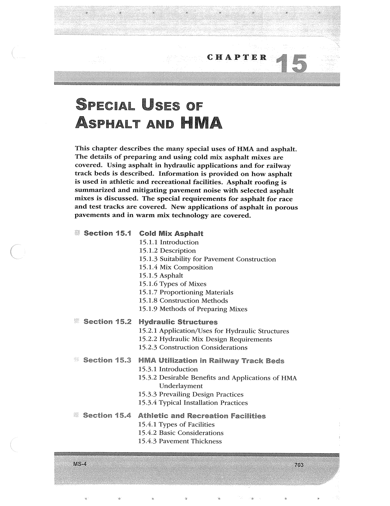

PDF page 737 · book page sequence 703


Searchable transcription
Unproofread OCR · 192 detected words; mean OCR confidence 93.58. Check technical values, symbols and table columns against the scan.
ore,
CHAPTER
SpeEcIAL Uses oF ASPHALT AND HMA
This chapter describes the many special uses of HMA and asphalt. The details of preparing and using cold mix asphalt mixes are covered. Using asphalt in hydraulic applications and for railway track beds is described. Information is provided on how asphalt is used in athletic and recreational facilities. Asphalt roofing is summarized and mitigating pavement noise with selected asphalt mixes is discussed. The special requirements for asphalt for race and test tracks are covered. New applications of asphalt in porous pavements and in warm mix technology are covered.
Section 15.1 Cold Mix Asphalt 15.1.1 Introduction 15.1.2 Description 15.1.3 Suitability for Pavement Construction 15.1.4 Mix Composition 15.1.5 Asphalt 15.1.6 Types of Mixes 15.1.7 Proportioning Materials 15.1.8 Construction Methods 15.1.9 Methods of Preparing Mixes
~ Section 15.2 Hydraulic Structures 15.2.1 Application/Uses for Hydraulic Structures 15.2.2 Hydraulic Mix Design Requirements 15.2.3 Construction Considerations
Section 15.3 HMA Utilization in Railway Track Beds 15.3.1 Introduction 15.3.2 Desirable Benefits and Applications of HMA Underlayment 15.3.3 Prevailing Design Practices 15.3.4 Typical Installation Practices
“ Section 15.4 Athletic and Recreation Facilities 15.4.1 Types of Facilities 15.4.2 Basic Considerations 15.4.3 Pavement Thickness
&